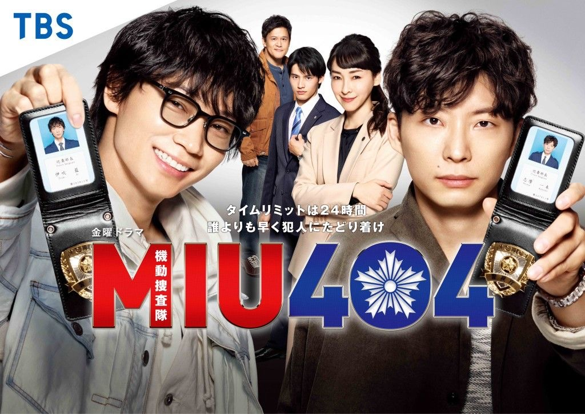
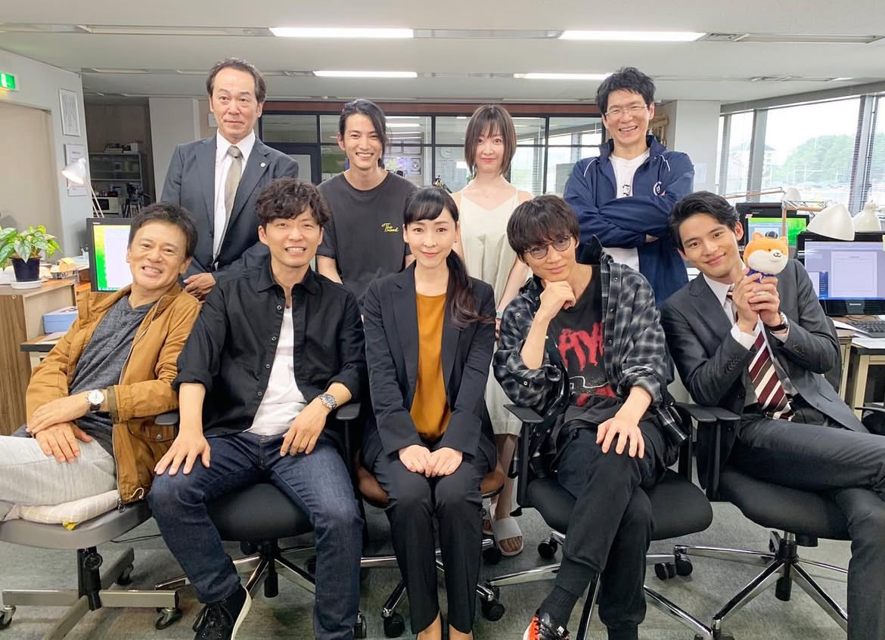
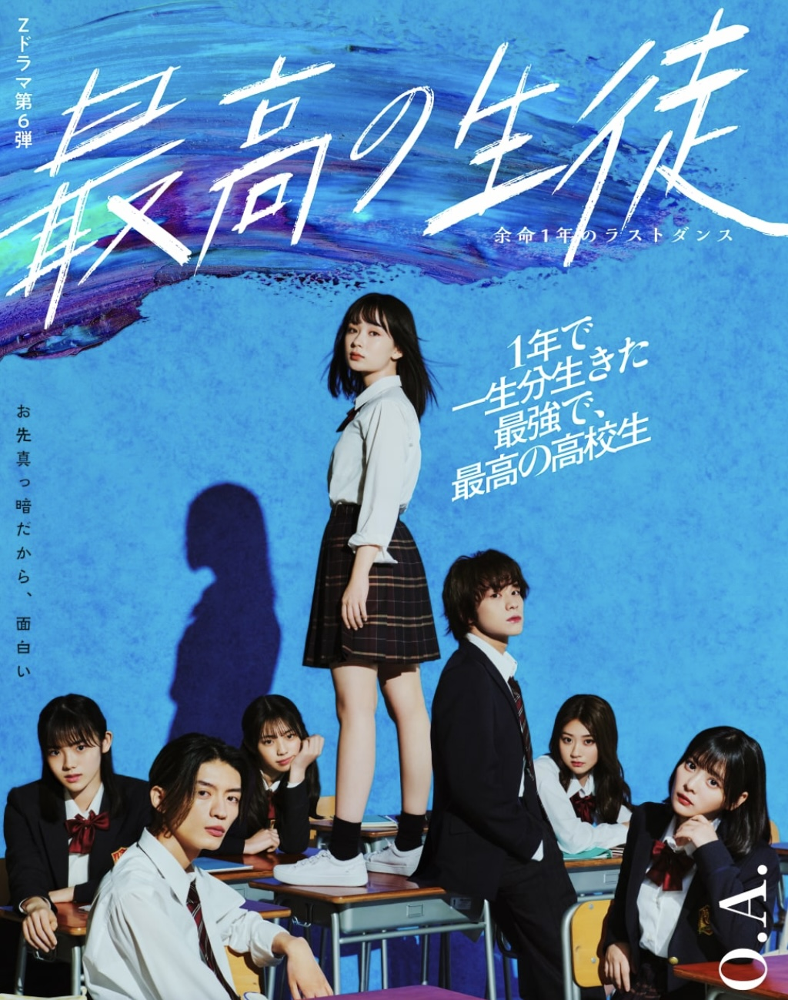
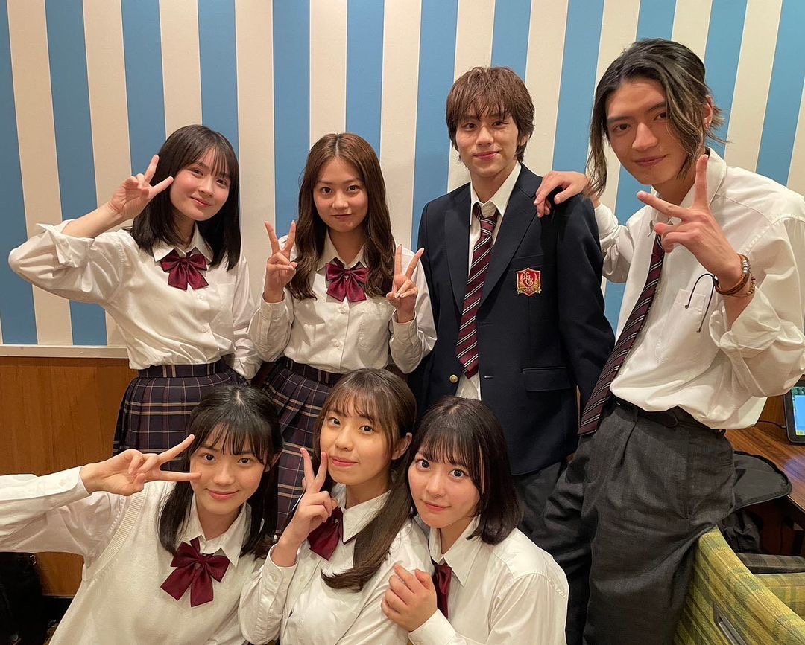
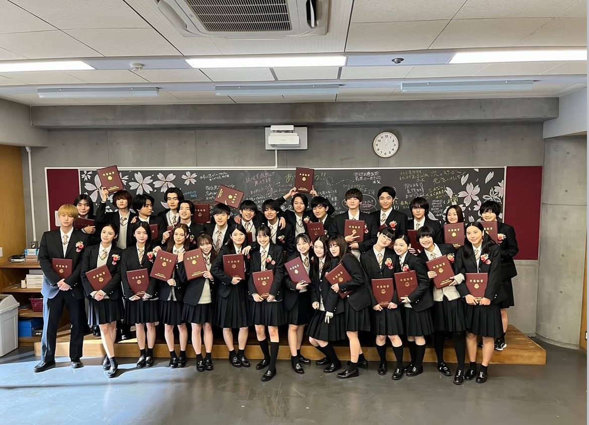

Drama>>
『MIU404』


[MIU404 Introduction]
約2年ぶりのTBSドラマ出演となる綾野剛＆星野源のW主演作
『逃げ恥』『アンナチュラル』の脚本家・野木亜紀子によるオリジナル脚本でお届けする一話完結のノンストップ「機捜」エンターテインメント！
警視庁“機動捜査隊”（通称：機捜）で綾野・星野がバディを組み24時間というタイムリミットの中で犯人逮捕にすべてを懸ける.
唯一の武器は機動力。誰よりも早く、犯人を追え！
[MIU404×アンナチュラルの世界とつながる新たなストーリー映画予告]
『最高の生徒～余命１年のラストダンス～』


[最高の生徒～余命１年のラストダンス～ Introduction]
余命1年という残された時間が有限であると分かった時、今までの常識や大人が押し付けてくる当たり前に疑問が沸き、人は物を見る尺度、意識、立ち振る舞いが変わり、生き方が変わる。
1人でサヨナラすること、1人でここから出ていくことそれは少し寂しいけど、今まで怯えてできなかったこと、恥ずかしくて言い出せなかったこと
本当にやりたかったこと、あの人に言えなかった好き、ごめんなさい、ありがとう。一生みんなが超えることのない想い出作り。
誰になんと言われようがやり切れる力が沸き上がってくる。
さあ、衝動のままに過ごせる無敵タイムを楽しもう!!
このドラマはそんな思いを毎話教えてくれる最高の高校生が生きたストーリ。
『御上先生』

[御神先生 Introduction]
坂桃李が日曜劇場初主演！文科省の“官僚”兼“教師”が権力に侵された日本教育をぶっ壊す！？
―辞令、日本教育の破壊を俺に命ずる―文科省のエリート官僚が高3の担任教師に！
“官僚教師”が行う独自の授業とは！？
令和の18歳と共に日本教育に蔓延る、腐った権力へ立ち向かう
大逆転教育再生ストーリー！